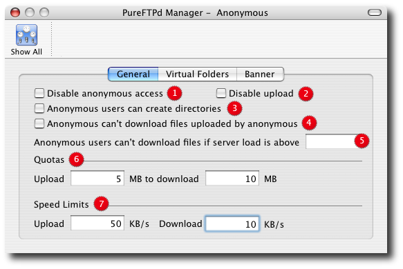

PureFTPd Manager - Anonymous

General Options
2. Disallow upload for anonymous users, whatever directory permissions are. This option is especially useful for virtual hosting, to avoid your users creating warez sites in their account. 3. Allow anonymous users to create directories 4. Don't allow anonymous users to download files owned by "ftp" (generally, files uploaded by other anonymous users). So that uploads have to be validated by a system administrator (chown to another user) before being available for download. 5. Don't allow anonymous download if the load is above <cpu load> . A very efficient way to prevent overloading your server. Upload is still allowed, though. 6. Enable ratios for anonymous users. 7. Enable speed limit for anonymous users. Virtual Folders and Banner As for virtual users, you can specify virtual folders for anonymous users. Please see the User Manager to read more on this topic. You can also set a specific banner to welcome anonymous users to your server. |